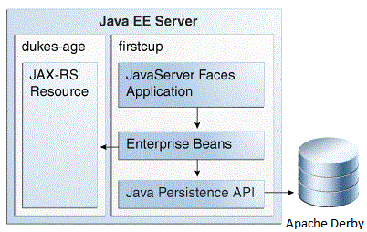

Copyright © 2017, Oracle and/or its affiliates. All rights reserved.
Copyright © 2017, Oracle and/or its affiliates. All rights reserved.
|
Java Platform, Enterprise Edition (Java EE) 8 Your First Cup: An Introduction to the Java EE Platform |
| Previous | Next | Contents |
The example applications consist of four main components:
DukesAgeResource, a JAX-RS RESTful web service; DukesBirthdayBean,
an enterprise bean; FirstcupUser, a Java Persistence API entity; and
firstcup-war, a web application created with JavaServer Faces Facelets
technology.

DukesAgeResource is a JAX-RS resource that calculates the age of Duke,
the Java mascot. Duke was born May 23, 1995, when the first demo of Java
technology was publicly released.
DukesBirthdayBean is a local, no-interface view stateless session bean
that calculates the difference between the user’s age and Duke’s age and
stores the user-submitted data in a Java Persistence API entity.
FirstcupUser is a Java Persistence API entity that represents a
particular user’s birthday. It is stored in an Apache Derby table and
managed by the DukesBirthdayBean business methods.
The firstcup-war web application is a JavaServer Faces Facelets
application that accesses DukesAgeResource to display Duke’s age,
reads in a date provided by the user, accesses DukesBirthdayBean to
calculate who is older, and then displays the difference in years
between the user and Duke and the average age difference of all users.
The firstcup-war web application consists of the following:
greeting.xhtml: A Facelets-enabled XHTML page, which is a page that
uses the JavaServer Faces Facelets tag libraries. Users can type their
birth date in a field and submit it for comparison against Duke’s birth
date.
response.xhtml: A Facelets-enabled XHTML page that tells the user
whether he or she is older or younger than Duke, based on the date the
user entered in the greeting.xhtml page, and displays the average age
difference of all users.
DukesBDay.java: A CDI managed bean that defines properties to hold
the user’s birth date, uses the JAX-RS Client API to get Duke’s current
age from the DukesAgeResource web service, and calculates the age
difference between the user and Duke from the enterprise bean.
web.xml: The web application’s deployment descriptor, which is used
to configure certain aspects of a web application when it is installed.
In this case, it is used to provide a mapping to the application’s
FacesServlet instance, which accepts incoming requests, passes them to
the life cycle for processing, and initializes resources. It also
specifies greeting.xhtml as the welcome file for the application.
WebMessages.properties and WebMessages_es.properties: Java
programming language properties files that contain the localized strings
used in greeting.xhtml and response.xhtml. By default, the English
language strings in WebMessages.properties are used, but Spanish
language strings are also provided in WebMessages_es.properties.
DukesBirthdayBean.java: as described above, the enterprise bean
packaged within the firstcup-war application. DukesBirthdayBean
calculates the difference between the user’s birthday and Duke’s
birthday.
The example applications have a web tier component (the firstcup-war
web client), three business tier components (the DukesAgeResource web
service, the FirstcupUser entity, and the DukesBirthdayBean
enterprise bean), and an enterprise information system (EIS) tier (the
data in the Apache Derby database table). The user’s web browser is the
client tier component, as it accesses the rest of the application
through the web tier.
The DukesAgeResource web service is a JAX-RS resource. The
DukesBirthdayBean enterprise bean is a stateless session bean. The
FirstcupUser entity is a Java Persistence API entity. The DukesBDay
CDI managed bean uses the JAX-RS client API to access the
DukesAgeResource web service. The firstcup-war web client is a
JavaServer Faces application that runs in the web container of the Java
EE server.
| Previous | Next | Contents |
Copyright © 2017, Oracle and/or its affiliates. All rights reserved.